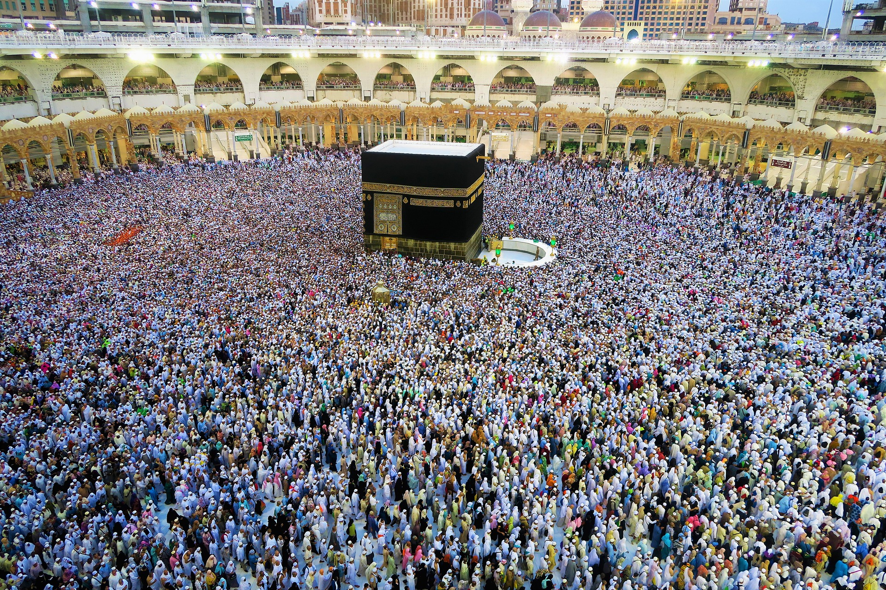
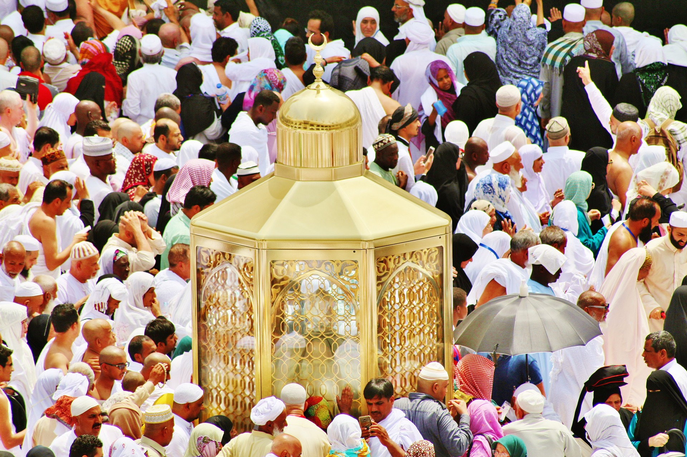
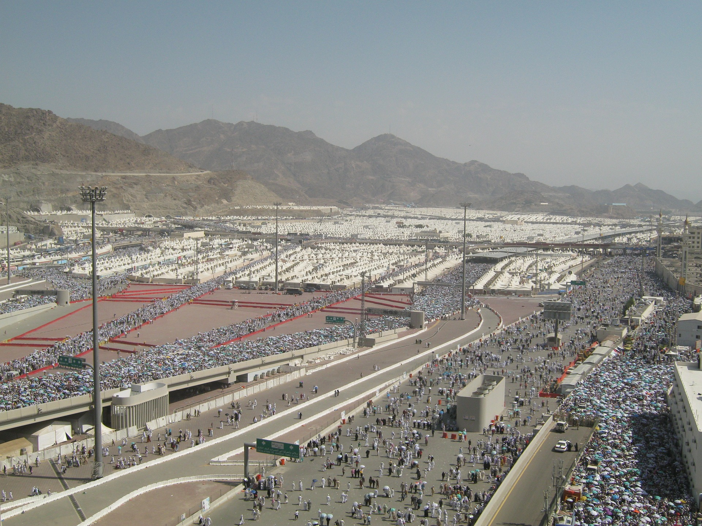
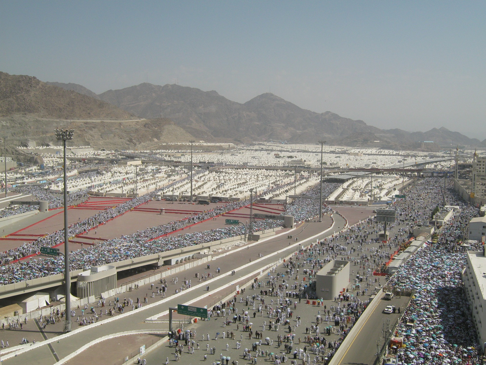

la Mecque
Faire un voyage à La Mecque est une grande bénédiction. La ville la plus sacrée de l'islam est le lieu de naissance du prophète Mouhammad(PSL) et l'endroit où le Coran lui a été révélé pour la première fois.les musulmans prient en direction de La Mecque. Le pèlerinage annuel du Hajj est l'un des cinq piliers de la foi.


 
